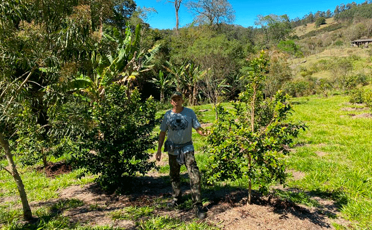
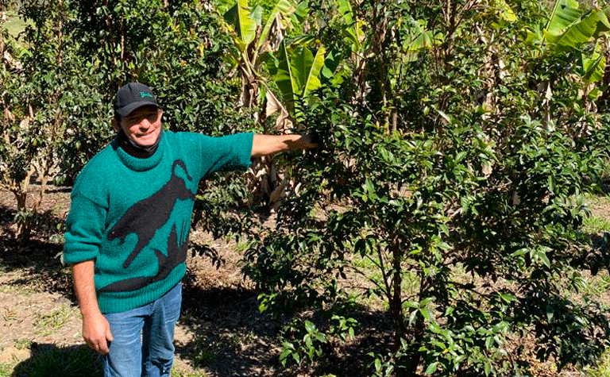

One of the most important
One of the most important aspects of our work is our
partnership with local farmers,
where we favor and strengthen
the growth of their communities.
We call them Naturanic
Guardians, a vital part of our
cycle of Good.
From the start, The Natural Organic Co. have adopted a
business model based on an intense partnership with
local producers, thus favoring and valuing the growth
of these regions
business model based on an intense partnership with
local producers, thus favoring and valuing the growth
of these regions



